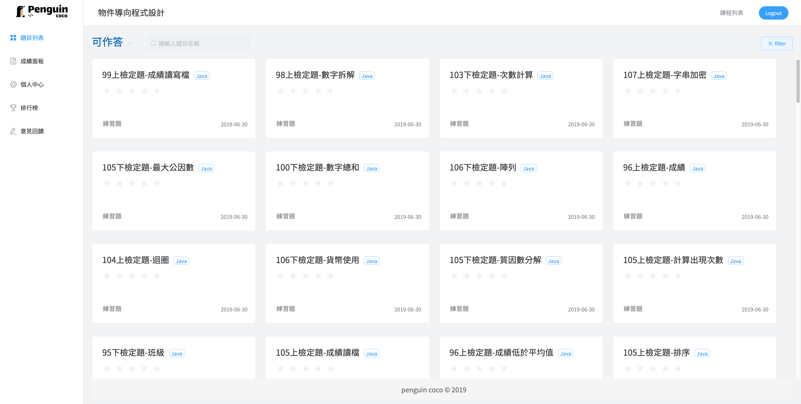

<!DOCTYPE html>
<html lang="en">
<head>
  <meta charset="UTF-8">
  <meta name="viewport" content="width=device-width, initial-scale=1.0">
  <meta http-equiv="X-UA-Compatible" content="ie=edge">
  <link rel="icon" type="image/png" sizes="32x32" href="img/favicon.png">
  <link href="https://fonts.googleapis.com/css?family=Noto+Sans+TC&display=swap" rel="stylesheet">
  <link href="https://fonts.googleapis.com/css?family=Roboto:100,300,400,500,700,900" rel="stylesheet">
  <link rel="stylesheet" href="css/basic.css">
  <link href="https://cdn.jsdelivr.net/npm/@mdi/font@3.x/css/materialdesignicons.min.css" rel="stylesheet">
  <link href="https://cdn.jsdelivr.net/npm/vuetify@2.x/dist/vuetify.min.css" rel="stylesheet">
  <link rel="stylesheet" href="https://cdnjs.cloudflare.com/ajax/libs/font-awesome/5.10.2/css/all.min.css">
  
  <title>Penguin Coco - The Best Online Judge</title>
</head>
<body>
  <div id="app">
  <v-app>
    <!-- header start -->
    <header id="navheader">
      <div class="logo">
        
      </div>
    </header>
    <!-- header end -->
    
    <!-- title section start -->
    <section id="title-section">
      <v-container>
        <v-row>
          <v-col cols="10" offset="1">
            <v-row>
              <v-col cols="6" class="left">
                <p class="first font-weight-bold" style="font-size: 3rem;">老師、學生最強大的</p>
                <p class="font-weight-bold" style="font-size: 3rem;">程式批改 & 輔助教學系統</p>
                <v-btn class="start-btn" rounded color="primary" large dark @click="toPenguin">Get Started</v-btn>
              </v-col>
              <v-col cols="6" class="right">
                
              </v-col>
            </v-row>
          </v-col>
        </v-row>
      </v-container>
    </section>
    <!-- title section end -->

    <!-- how-to-build-section start -->
    <section id="how-to-build-section">
      <div class="build-title">
        <p>我們怎麼做到最好</p>
      </div>
      <v-container>
        <v-row>
          <v-col cols="10" offset="1" class="build-row">
            <v-row>
              <v-col cols="3">
                <div class="icon"><i class="fab fa-delicious"></i></div>
                <div class="icon-title">持續提供最佳的使用者體驗</div>
              </v-col>
              <v-col cols="3">
                <div class="icon"><i class="fas fa-chalkboard-teacher"></i></div>
                <div class="icon-title">結合教育理論，提升學習效能</div>
              </v-col>
              <v-col cols="3">
                <div class="icon"><i class="fas fa-archive"></i></div>
                <div class="icon-title">跨校題庫系統</div>
              </v-col>
              <v-col cols="3">
                <div class="icon"><i class="far fa-chart-bar"></i></div>
                <div class="icon-title">紀錄學習歷程，分析學生學習狀況</div>
              </v-col>
            </v-col>
            
          </v-col>
        </v-row>
      </v-container>
    </section>
    <!-- how-to-build-section end -->

    <!-- study-pie-section start -->
    <section id="study-pie-section">
      <v-row>
        <v-col cols="10" offset="1">
          <v-card class="study-card">
            <div class="card-title">學生因為Pengion Coco &nbsp; 更喜歡程式了</div>
            <v-row class="card-progress">
              <v-col cols="10" offset="1">
                <v-row>
                  <v-col cols="4" v-for="item in studyCardValue" :key="item.value">
                    <v-progress-circular :rotate="360" :size="200" :width="15" :value="item.value" :color="item.color">{{ item.value }}</v-progress-circular>
                    <p class="progress-desc">{{ item.desc }}</p>
                  </v-col>
                </v-row>
              </v-col>
            </v-row>
          </v-card>
        </v-col>
      </v-row>
    </section>
    <!-- study-pie-section end -->

    <!-- function-section start -->
    <section id="function-section">
      <v-row style="padding-top: 70px;">
        <v-col cols="10" offset="1">
          <v-row>
            <v-col class="teacher" cols="12">
              <v-row>
                <v-col class="character" cols="5" offset="1">
                  <div class="icon"><i class="fas fa-user-tie"></i> &nbsp; <span class="font-weight-bold">老師功能</span></div>
                  <ul>
                    <li v-for="(item, index) in teacherFunction" :key="index+1">
                      <i :class="item.icon" class="mr-4" style="color:#67C23A;"></i>{{ item.desc }}
                    </li>
                  </ul>
                </v-col>
                <v-col cols="6">
                  
                </v-col>
              </v-row>
            </v-col>
            <v-col class="student mt-10" cols="12">
              <v-row>
                <v-col cols="6">
                  
                </v-col>
                <v-col class="character" cols="5" offset="1">
                  <div class="icon"><i class="fas fa-user"></i> &nbsp; <span class="font-weight-bold">學生功能</span></div>
                  <ul>
                    <li v-for="(item, index) in studentFunction" :key="index+1">
                      <i :class="item.icon" class="mr-4" style="color:#67C23A;"></i>{{ item.desc }}
                    </li>
                  </ul>
                </v-col>
              </v-row>
            </v-col>
          </v-row>
        </v-col>
      </v-row>
    </section>
    <!-- function-section end -->

    <!-- contact-section start -->
    <section id="contact-section">
      <div class="contact-title">
        <p>聯絡我們</p>
      </div>
      <v-row class="contact-main">
        <v-col cols="10" offset="1">
          <v-row justify="center">
            <v-col cols="3" style="margin-right: 50px;">
              <v-card>
                <v-card-title>蘇靖軒</v-card-title>
                <v-card-text>Front-End Developer</v-card-text>
                <v-card-actions>
                  <v-btn text icon>
                    <v-icon @click="mailToMusic">fas fa-envelope</v-icon>
                  </v-btn>
                  <v-btn text icon>
                      <v-icon @click="toMusicGithub">fab fa-github</v-icon>
                    </v-btn>
                </v-card-actions>
              </v-card>
            </v-col>
            <v-col cols="3">
              <v-card>
                <v-card-title>陳冠億</v-card-title>
                <v-card-text>Back-End Developer</v-card-text>
                <v-card-actions>
                  <v-btn text icon>
                    <v-icon @click="mailToKennyChen">fas fa-envelope</v-icon>
                  </v-btn>
                  <v-btn text icon>
                      <v-icon @click="toKennyChenGithub">fab fa-github</v-icon>
                    </v-btn>
                </v-card-actions>
              </v-card>
            </v-col>
          </v-row>
        </v-col>
      </v-row>
    </section>
    <!-- contact-section end -->

    <!-- footer start -->
    <footer id="footer">
      <p>penguin coco &copy; {{ new Date().getFullYear() }}</p>
    </footer>
    <!-- footer end -->
  </v-app>
  </div>

  <script src="https://cdn.jsdelivr.net/npm/vue@2.6.0"></script>
  <script src="https://cdn.jsdelivr.net/npm/vuetify@2.x/dist/vuetify.js"></script>
  <script>
    var app = new Vue({
      el: '#app',
      vuetify: new Vuetify(),
      data() {
        return {
          // study pie section
          studyCardValue: [{
            value: 85.6,
            color: 'green',
            desc: '更想練習程式'
          }, {
            value: 82.7,
            color: 'deep-orange lighten-2',
            desc: '比其他平台更方便'
          }, {
            value: 48.3,
            color: 'indigo darken-2',
            desc: '更想改進自己的程式寫法'
          }],
          // function section
          teacherFunction: [{
            icon: 'fas fa-check-square',
            desc: '自動批改程式作業'
          }, {
            icon: 'fas fa-check-square',
            desc: '易於統計成績'
          }, {
            icon: 'fas fa-check-square',
            desc: '全面掌控學生學習狀況'
          }],
          studentFunction: [{
            icon: 'fas fa-check-square',
            desc: '即時成績回饋'
          }, {
            icon: 'fas fa-check-square',
            desc: '管理練習題目'
          }, {
            icon: 'fas fa-check-square',
            desc: '查看學習歷程'
          }]
        }
      },
      methods: {
        // header
        toPenguin() {
          window.open('http://penguincoco.tk', '_blank');
        },
        // contact
        mailToMusic() {
          window.open('mailto:music1353@gmial.com', '_blank');
        },
        toMusicGithub() {
          window.open('https://github.com/music1353', '_blank');
        },
        mailToKennyChen() {
          window.open('mailto:kennychen851228@gmail.com', '_blank');
        },
        toKennyChenGithub() {
          window.open('https://github.com/KennyChenFight', '_blank');
        }
      }
    })
  </script>
</body>
</html>

<style>
  /* navheader */
  #navheader {
    height: 15vh;
  }

  #navheader .logo {
    margin-top: 40px;
    margin-left: 6%;
    border-right: none;
  }

  #navheader img {
    margin-top: 8px;
    width: 150px;
  }

  /* title sction */
  #title-section {
    height: 85vh;
  }

  #title-section .left .first {
    margin-top: 10vh;
    margin-bottom: 40px;
  }

  #title-section .left .start-btn {
    margin-top: 10vh;
  }

  #title-section .right .mac {
    height: 70vh;
  }

  /* how to build section */
  #how-to-build-section {
    background-color: #0E182F;
  }

  #how-to-build-section .build-title {
    text-align: center;
    color: white;
    margin-top: 12vh;
    font-size: 30px;
    font-weight: 500px;
  }

  #how-to-build-section .build-row {
    margin-top: 30px;
    padding-bottom: 400px;
    text-align: center;
  }

  #how-to-build-section .build-row .icon {
    color: white;
    font-size: 75px;
    margin-bottom: 15px;
  }

  #how-to-build-section .build-row .icon-title {
    color: white;
    font-size: 20px;
  }

  /* study--section */
  #study-pie-section .study-card {
    margin-top: -270px;
    padding-bottom: 70px;
    font-weight: 500;
  }

  #study-pie-section .study-card .card-progress {
    text-align: center;
    margin-top: 60px;
  }

  #study-pie-section .study-card .card-progress .progress-desc {
    margin-top: 25px;
    font-size: 20px;
    font-weight: 400;
  }

  #study-pie-section .study-card .card-title {
    text-align: center;
    padding-top: 50px;
    font-size: 30px;
  }

  /* function section */
  #function-section .character .icon {
    font-size: 35px;
  }

  #function-section .character ul {
    list-style-type: none;
  }

  #function-section .character ul li {
    font-size: 25px;
    margin: 35px;
  }

  #function-section .char-img {
    width: 40vw;
  }

  /* contact section */
  #contact-section {
    background-color: #2d2d2d;
  }

  #contact-section .contact-title {
    color: white;
    text-align: center;
    margin-top: 7vh;
    margin-bottom: 30px;
    font-size: 30px;
    font-weight: 500;
  }

  #contact-section .contact-main {
    padding-bottom: 70px;
  }

  /* footer */
  #footer {
    padding-right: 40px;
    line-height: 50px;
    text-align: center;
    background-color: #212121;
    color: #f5f5f5;
  }
    
  #footer p {
    margin: 0px;
  }
</style>

